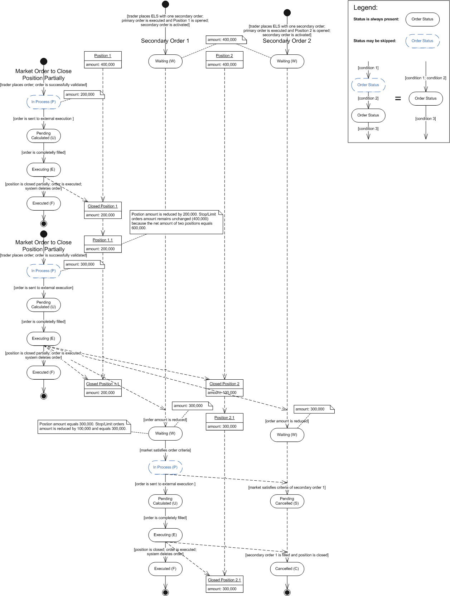

Scenario 5
Brief
Two ELS contingent orders are placed and two position are opened. The secondary orders close the positions. The positions are partially closed by the market order during the ELS orders processing.
Details
The ELS contingent order is placed to enter the market. The order consists of a primary order and a secondary order. The amount of the order is equal 400,000. The primary order is executed, position is opened and secondary order is activated. After that the same ELS in the same instrument is placed, the second position is opened and secondary order is activated (this part of the scenario is not shown on the diagram).
So there are two opened positions with net amount equals 800, and two secondary orders the amount of each equals 400,000. Then the market order is placed to reduce position amount by 200,000. The market order is executed and the first position (according to FIFO rules) is closed and a new position with remaining amount of 200,000 is opened. The amount of the secondary orders is remains unchanged because the net amount of two positions equals 600,000 that is greater than each secondary order amount (400,000). After that one more closing market order with amount equals 300,000 is placed. The market order is executed, and the first position is completely closed, and the second position is closed partially (300,000 remains opened). The amount of secondary orders is reduced by 100,000 and equals 300,000 that is not exceed the position amount. The market satisfies the criteria of the first secondary order, the order is successfully executed, the second position is closed, and the other secondary order is cancelled.
Scenario Diagram
